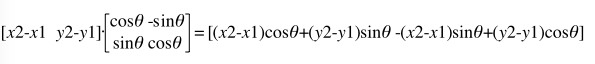

平面上的一个多边形ABCDE绕点F旋转theta弧度，转化成程序实现需要用到向量和矩阵的运算规则。
思路是：
设O为原点
所有点先平移FO向量，然后从O出发，计算出 向量 OA, OB, OC, OD, OE 这五个
把这五个向量各自转换成矩阵，依次与旋转向量做乘法
得出的结果平移OF向量，即可得到最后答案
现在假设点F坐标 (x1,y1)，点A坐标 （x2,y2），则计算出 FA向量是 (x2-x1,y2-y1)
逆时针旋转theta弧度的矩阵:
然后做矩阵乘法：

得到的结果平移[x1 y1]即最终答案，因此可以转化为程序代码如下：
let transform2d=(deg,F,A)=>{
let [x1,y1]=F,[x2,y2]=A
let rad=deg/180*Math.PI
let sin=Math.sin(rad),cos=Math.cos(rad)
return [
(x2-x1)*cos+(y2-y1)*sin+x1,
-(x2-x1)*sin+(y2-y1)*cos+y1,
]
}完整实例：
<canvas id='c' style='position:absolute;left:0;top:0;background:#000;' width='500' height='400'></canvas>
<script>
let cvs=c.getContext('2d')
let p=[],d=Date.now()
for(let i=0,b=d%360,n=d%5+4;i<n;i++){
let c=b+360/n*i/180*Math.PI
p.push([
(Math.random()*150+50)*Math.cos(c)+250,
(Math.random()*150+50)*Math.sin(c)+200,
])
}
let transform2d=(deg,F,A)=>{
let [x1,y1]=F,[x2,y2]=A
let rad=deg/180*Math.PI
let sin=Math.sin(rad),cos=Math.cos(rad)
return [
(x2-x1)*cos+(y2-y1)*sin+x1,
-(x2-x1)*sin+(y2-y1)*cos+y1,
]
}
let drawpts=(pts)=>{
cvs.clearRect(0,0,500,400)
cvs.beginPath()
pts.map((t,i)=>{
cvs[i?'lineTo':'moveTo'](t[0],t[1])
})
cvs.closePath()
cvs.strokeStyle='#fff';
cvs.stroke()
}
setInterval(()=>{
p=p.map((t)=>{
return transform2d(1,[250,200],t)
})
drawpts(p)
},10)
</script>
参考：
相关文档
暂无
随便看看